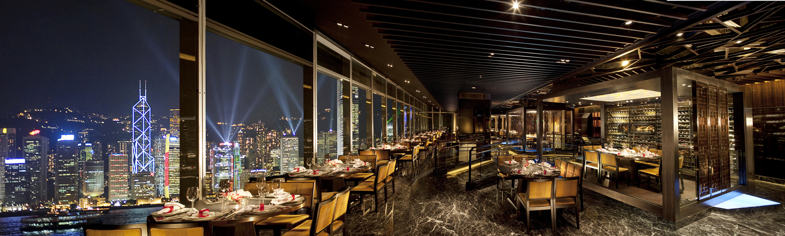

Welcome to Restaurant and Knowledge Search
This is an IONIC Mash up application for Knowledge Search and Restaurants Search
Hi, {{users.name}} ({{users.email}})
Gender: {{users.gender}}

This is an IONIC Mash up application for Knowledge Search and Restaurants Search
Gender: {{users.gender}}